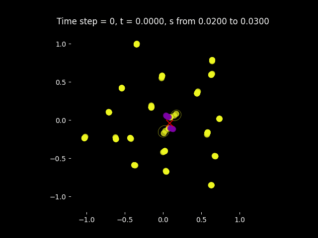

Welcome to Carlos Vargas' personal webpage

I obtained my PhD in Mathematics in 2015 from Universitaet des Saarlandes, under the supervision of Prof. Dr. Roland Speicher.
I am interested in free and (operator-valued) non-commutative probability, large
random matrices, incidence algebras, cumulants and statistics, posets and their combinatorial Moebius functions.
Publications
- Diaz-Aguilera C., Gaxiola T., Santos J., Vargas C.
Combinatorics of NC-probability spaces with Independent Constants.
Infinite Dimensional Analysis, Quantum Probability and Related Topics, pp 20 (2022).
- Arizmendi, O., Tarrago, P. Vargas, C.
Subordination methods
for free deconvolution.
Annales de l'Institut Henri Poincaré, Probabilités et Statistiques,
Vol 56, 4, pp 2565-2594 (2020).
- Vargas, C.
A general solution to
(free) deterministic equivalents.
Contemporary Mathematics (AMS/SMM) vol 709, pp 28 (2018).
- Arizmendi, O., Vargas C.
Norm convergence in non
conmutative central limit theorems.
Contemporary Mathematics (AMS/SMM), vol. 657, pp 63-73 (2016).
- Arizmendi, O., Nechita I., Vargas, C.
On
the asymptotic distribution of block-modified random matrices.
Journal of Mathematical Physics 57, 015216, (2016).
- Arizmendi O., Hasebe, T., Lehner, F., Vargas, C.
Relations
between cumulants in noncommutative probability.
Advances in
Mathematics Volume 282, pp 56–92, (2015)
- Belinschi S., Speicher R., Treilhard J., Vargas, C.
Operator-valued
free multiplicative convolution: analytic subordination theory and applications
to random matrix theory.
International Mathematical Research Notices,
(2014).
- Arizmendi, O. , Vargas C.
Limit
theorems and infinite divisibility in non-commutative
probability.
Bol. Soc. Mat. Mex. (3) 19, no. 2, pp 139–157, (2013).
- Speicher, R., Vargas C.
Free
deterministic equivalents, renctangular random matrix models and
operator-valued free probability.
Random Matrices: Theory and Applications 01, 1150008, (2012).
- Arizmendi, O., Vargas C.
Products of free
random variables and k-divisible non-crossing partitions.
Electron. Commun. Probab. 17 (2012) no. 11, 13 pp. (2012).
Supervised Students
- Marcos Torres Vivanco (CIMAT, April 2021).
MSc thesis: Estadisticos Topologicos
en el Estudio de Electrocardiogramas.
- Jorge Luis Santos Silva (CIMAT, Jan. 2021).
MSc thesis: Dos que tres propiedades de
cumulantes.
- Saul Rogelio Mendoza Jacobo (CIMAT, Dec. 2019).
MSc thesis: Aplicaciones de la Teoría de Probablidad
Libre a la Teoria de la Informacion Cuántica.
- Carlos Eduardo Diaz Aguilera (CIMAT, Jul. 2019).
MSc thesis: Categorical Independence and
non-commutative distributions for simplicial complexes.
- Gustavo Adolfo Garcia Gutierrez (Universidad de Guanajuato,
Mar. 2019).
BSc thesis: Momentos del Grupo Unitario.
- Saul Rogelio Mendoza Jacobo (Jul. 2017, Universidad Autonoma de
Sinaloa).
BSc thesis: Teoria de Probabilidad
Bi-libre.
Organized Conferences